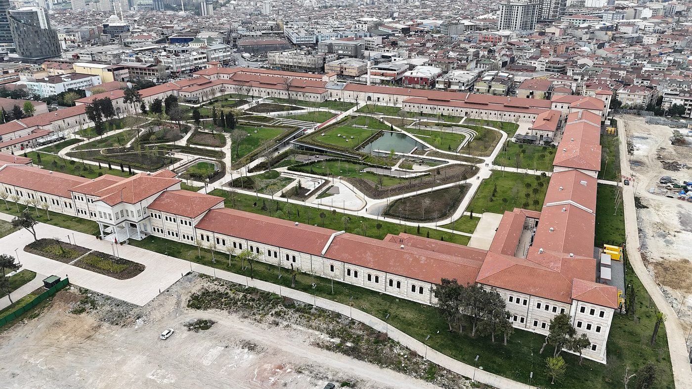

Conference venue: Rami Library
Rami Library (Rami Kütüphanesi) is a public library of the Ministry of Culture and Tourism located in the district of Eyüpsultan on the European side of Istanbul. The library occupies the Rami Barracks, built in the mid-eighteenth century and used by the Ottoman and Republican armies until the twentieth century. After restoration the complex was opened as a library in 2023. It has 36,000 m² of indoor space and 51,000 m² of grounds, seating for 4,200 readers, reading rooms, children's and youth libraries, manuscript and rare book collections, seminar and conference halls, exhibition spaces and workshops. The library is open 24 hours a day throughout the year.
Conference sessions take place in the library's conference hall and seminar rooms. The welcome reception is held on the library grounds.


Address
Rami Kütüphanesi
Rami Kışla Caddesi, Topçular
34055 Eyüpsultan, İstanbul, Türkiye
ramikutuphanesi.gov.tr
Accessibility
The building is step-free with lifts and accessible toilets. Participants with access requirements are asked to indicate them on the registration form.
Travel to Istanbul
Istanbul is served by two international airports.
- Istanbul Airport (IST), European side, approximately 35 km from the venue. Connections to the city by Havaist airport buses, metro line M11 and taxi. Journey time to Eyüpsultan by taxi about 40 minutes.
- Sabiha Gökçen Airport (SAW), Asian side, approximately 50 km from the venue. Connections by Havabus shuttle to Taksim and by metro; allow 60–90 minutes to the venue.
Local transport to the venue
- Tram: tram line T4 (Topkapı – Mescid-i Selam) stops adjacent to the library; connection from metro line M1 and tram line T1 at Topkapı.
- Bus: İETT bus lines from Eminönü, Eyüpsultan and Taksim serve the Rami and Topçular stops.
- Taxi: approximately 15–20 minutes from Sultanahmet and Eminönü, 25 minutes from Taksim, depending on traffic.
- Istanbulkart: the rechargeable public transport card is valid on metro, tram, bus and ferry services and is sold at airports and stations.
- Conference shuttle: a shuttle service between the partner hotels and the venue will be provided on the conference days. Details will be published with the final programme.
Accommodation
Special rates at partner hotels will be announced in spring 2027. Participants are advised to book early, as September is a high season in Istanbul. Suitable districts:
- Eyüpsultan / Golden Horn: closest to the venue.
- Fatih / Sultanahmet: the historic peninsula, 15–20 minutes from the venue.
- Beyoğlu / Taksim: central business and cultural district, served by metro and the conference shuttle.
Practical information
| Currency | Turkish lira (TRY). Credit and debit cards are widely accepted. Conference fees are charged in euros. |
|---|---|
| Climate | Mid-September in Istanbul is warm, with daytime temperatures typically between 20 and 27 °C. |
| Language | Turkish. English is commonly spoken in hotels, transport hubs and tourist areas. The conference language is English. |
| Time zone | UTC+3 throughout the year. |
| Electricity | 230 V, 50 Hz; type C and F sockets. |
| Visa | See the e-Visa portal of the Republic of Türkiye and the Registration page for invitation letters. |